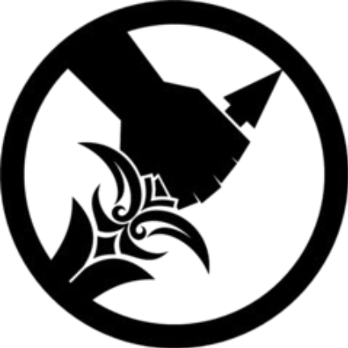
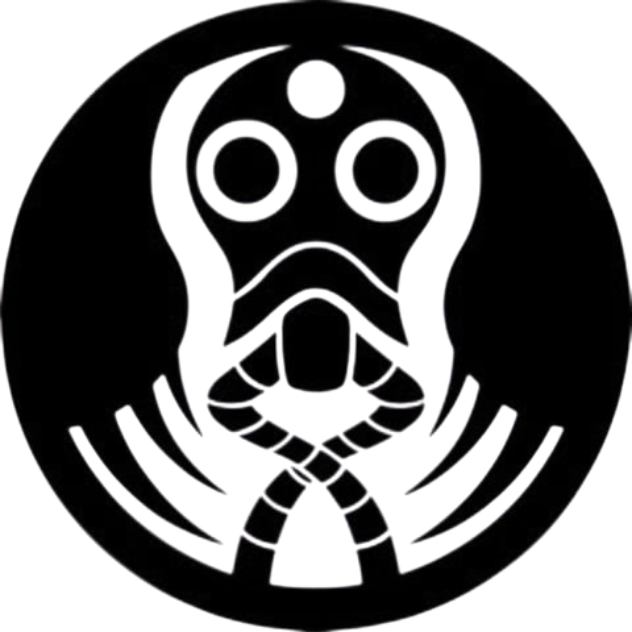
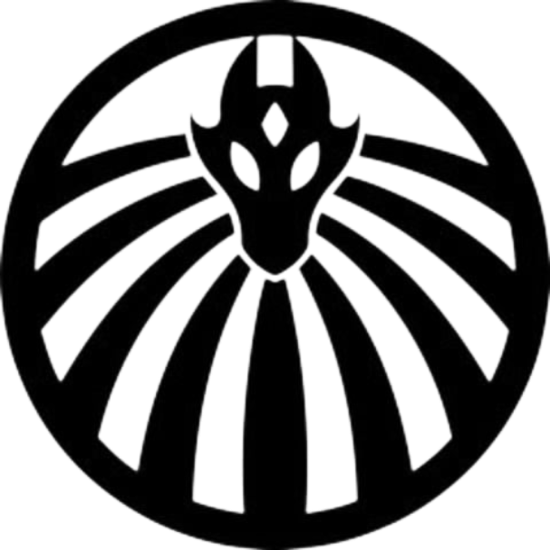

Mobile Task Forces (MTFs) are elite units composed of personnel drawn from across the Foundation and are mobilized to deal with specific threats or situations that sometimes exceed the operational capacity or expertise of regular field personnel and — as their name suggests — may be relocated between facilities or locations as they are needed. Mobile Task Force personnel represent the "best of the best" of the Foundation.
Mobile Task Forces vary greatly in size, composition, and purpose. A battalion-strength combat-oriented task force trained to deal with highly aggressive anomalous entities may consist of hundreds of troops plus support personnel, vehicles, and equipment and can be deployed in whole or in part to deal with threats across the globe. However, a Mobile Task Force can also be a small, specialized intelligence-gathering or investigative task force that may have fewer than a dozen personnel if that is deemed sufficient to accomplish their goals. While in the field, task force members often pose as emergency responders, local or federal law enforcement, or military personnel appropriate to the region in which they are operating. Mobile Task Force Commanders can also request the assistance of local field units or personnel stationed at nearby Foundation facilities in order to accomplish their missions.
Each unit is fundamentally structured in a way that best suits their intended purpose. While combat-oriented task forces may closely follow military hierarchy and organization, smaller units may have an informal or otherwise esoteric chain of command. As such, the responsibilities of the Mobile Task Force Commander (MTFC) for each particular task force can vary greatly; the commander for a large task force might focus on maintaining multiple teams and deploying them as necessary to each assigned operation, whereas the commander of a small team might deploy with their team and direct the operation from on location. Similarly, the cohesion of each unit will vary as well. Some Mobile Task Forces consist of personnel who have trained and worked for many years or even decades together, whereas the personnel of a Mobile Task Force formed on a moment's notice to deal with a specific incident may know little more than each others' names and fields of expertise.
Mobile Task Forces are typically commissioned as deemed necessary by the Foundation's Director of Task Forces, often with the direct approval of one or more O5 Council members. A significant number of Mobile Task Forces are created to deal with specific anomalies exhibiting traits that standard containment or response teams are unable to effectively counteract, though many were also created to pre-empt an emerging or theoretical threat.
Mobile Task Forces created for the purpose of containing a particular anomaly are typically deactivated at the end of the recovery operation or when ongoing containment is deemed no longer necessary. Occasionally, such task forces remain operational if the expertise and experiences learned are considered useful for future incidents, but otherwise the task force will likely be disbanded and its personnel returned to their prior posts. Very rarely, a Mobile Task Force will also be disbanded if it suffers sufficient casualties to render it incapable of operation. In these cases, if the prior capability of that particular task force is deemed necessary, a new task force may be commissioned to replace it.
Task Force Mission: Mobile Task Force Alpha-1 is a task force that reports directly to the O5 Council and is used in situations that require the strictest operational security. The task force consists of the Foundation's best and most loyal operatives, and serves as the O5 Council's special operations unit.
Task Force Mission: Mobile Task Force Rēsh-1 reports directly to the Administrator and serves as a counterbalance to the authority of the O5 Council. The task force operates independently of conventional Foundation command structures and is deployed when circumstances require intervention at the highest levels of Foundation administration. Its existence and operational capabilities are classified to prevent interference by other Foundation departments.

Task Force Mission: Mobile Task Force Omega-1 serves as the operational arm of the Ethics Committee and is tasked with investigating violations of Foundation ethical regulations and inhumane practices. The task force is authorized to take action against high-ranking Foundation personnel determined to be acting unethically, including removal or termination when necessary. Omega-1 functions as the Ethics Committee's counterpart to Alpha-1 and answers directly to the Committee.

Task Force Mission: Mobile Task Force Zeta-9 specializes in the investigation, exploration, and containment of underground or enclosed areas exhibiting anomalous phenomena. Particular attention is given to environments displaying inconsistent topography, impossible spatial relationships, or unstable spacetime. Zeta-9 personnel are trained and equipped for prolonged operations in environments where conventional navigation and spatial measurements may be unreliable. T The SCP Foundation
Task Force Mission: Mobile Task Force Beta-7 specializes in the acquisition and containment of anomalies presenting extreme biological, chemical, or radiological hazards. The task force is additionally responsible for the rapid containment and cleanup of areas affected by such anomalies, including the development and implementation of contingencies for wide-area or pandemic dissemination of anomalous diseases and other contagious phenomena.

Task Force Mission: Mobile Task Force Epsilon-11 handles internal security for the Foundation under the oversight of MTF Alpha-1. The task force is deployed to Foundation facilities when standard security and containment protocols have failed or when multiple containment breaches are imminent. Epsilon-11 specializes in emergency containment and recontainment operations within Foundation facilities and is typically deployed during large-scale security incidents.